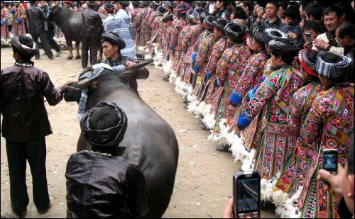
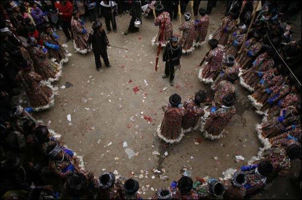
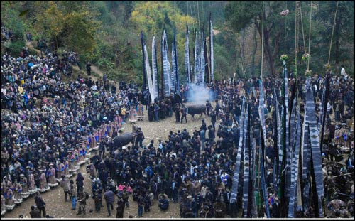

“牯藏节”，也称“吃牯藏”、“吃牯脏”、“刺牛”，是黔东南、桂西北苗族最隆重的祭祖仪式。节日由苗族各姓牯脏头组织。一般在历史上关系较密切的村寨间进行，牯脏节有小牯大牯之分。小牯每年一次，时间多在初春与秋后农闲季节，吃牯村寨杀猪宰牛邀请亲友聚会，其间举行斗牛、吹芦笙活动；大牯一般13年举行一次，轮到之寨为东道。。“牯藏节”的重要内容是杀牛祭祖。
来历的传说
传说一
这种古老的祭祖礼仪在苗族的创世歌里有所记录，因为苗族只有语言没有文字，再加上苗族人能歌善舞，所以歌便成了苗人最好的记录方式。歌词叙述说枫树是万物的生命树，这生命树在上古被女神妞香砍倒后，树根变成泥鳅，树干变成铜鼓，树枝变做鹊鸽，树心里生出了蝴蝶，蝴蝶生下了十二个蛋，成为十二个蛋的妈妈。蝴蝶妈妈孵蛋三年，孵化了十一个，包括雷公、鬼神、龙蛇、虎豹、豺狼、拥耶（最早的男人）、妮耶（最早的女人）等人、鬼、神、兽。但剩下的一个蛋经过三年的孵化后依然是一个蛋。蝴蝶妈妈只好请暴风帮忙，暴风把蛋刮下山崖，蛋壳破裂，钻出一头小牛。小牛怨恨蝴蝶妈妈没有亲自孵下它，把蝴蝶妈妈气死。拥耶、妮耶用牛耕地种田，但就是从未有过好收成。鬼神告诉拥耶、妮耶：因为大牯牛气死了蝴蝶妈妈，所以才不叫牛耕地的田园长出好庄稼。只有把大牯牛杀掉，祭拜蝴蝶妈妈才能求得庄稼的丰收。拥耶、妮耶宰牛祭拜蝴蝶妈妈，立刻迎来大丰收。这是“牯藏节”由来的一种传说。
传说二
远古的苗家有两姐妹，美丽善良、勤劳聪慧，姐姐叫‘贲’（苗语：花），妹妹叫‘鲠’（苗语：虫）。一天姐妹俩上山砍柴，被两只老虎盯上，于是虎幻化成两个青年人，将姐妹俩骗至大山里吃掉。
全寨人痛不欲生，她们的父亲和哥哥设计谋将老虎捉住并砍死，同时关闭寨门，杀一头小牯牛祭奠死去的两姐妹之后，请人们吃牛肉，告诫大家不要再上当受骗。这就是牯藏节的传说。
“牯藏头”的产生
“牯藏头”的产生首先要符合以下条件：第一，夫妻双方身体健康，有儿有女；第二，双亲健在；第三，人品端正，口碑好；第四，经济条件偏中上水平。全寨有多位壮年男子被推举成牯藏头候选人。如此一来，只有请德行高深的“沟横”（苗语：牯藏师）采用打草卦的方式来决定牯藏头。
活动准备
吃牯之寨提前一两年喂养牯牛，多者一家喂2-3头，少者两家喂一头，有青年、老人，尤其是姑娘，家庭力争多办衣物，银手饰，所有家庭竞相备足酒肉、鞭炮、红彩等礼物；姑娘则准备丝线，布鞋等物。主寨提前两月或半年向客人发出口头或书面邀请，临节前再次邀请客人，并用鱼藤草在斗牛场出入口扎拱门。节前一天，客人牵斗牛，担肉酒彩礼，吹笙鸣炮进寨，主寨亦吹笙鸣炮相迎，并举行敬神仪式。敬神时，寨头路口置岗哨把守，禁行人入寨。活动一般进行斗牛3至4日。第一日早饭后，男女青年着盛装进入斗牛场观牯牛打斗，不加干涉。第二天早晨，凡参加打斗的牯牛除少数外均宰杀，以内脏祭天地、祖先、祈求保佑五谷丰登、六畜兴旺，地方平安。节日期间，凡到场观看斗牛和踩歌堂者，皆视为贵宾，日夜歌酒不休。
活动过程
牯藏节开始，牯藏头在村中挑选连同自己在内12名德高望重的长老组成一支祭祀队伍，非常有意义的是，其中一名是年轻美貌的女性，牯藏节祭祖一切活动由他们安排。杀猪祭祖时，先宰杀牯藏头家猪，其余人家的猪，待牯藏头们分别祭扫后才陆续宰杀。杀牯藏头家的猪是一件非常规范和复杂的过程，礼仪特别多，用新砍伐的木竹编织成一个庞大体积喇叭形状，然后6个年轻人危坐其中，三十 余人抬着他们，前面长老开道，芦笙随后，在狭窄的小道中，吹吹跳跳向牯藏头家走去，笼中人出来，然后将牯藏头家猪装进去抬走，一次只能抬一头猪，反复数次将6只猪抬完装进一个新圈后，巫师们围着它们口中念念有词，然后将一支削尖的细木插进猪心脏，将猪处死，当地习俗，处理猪不用热水烫毛，而是用禾稻草火烧猪皮，全村烧猪场面犹如古战场。
在杀牛祭祖时，场面更为惊心动魄，时间选在深夜凌晨三点，此时周围人山人海，火把通明，杀牛地方采用两棵粗大的木桩捆在一起，形成X字形，两端深埋地下，只见牛被一大群人簇拥推拉着，将牛头架在X字形上面，随即由牛主人姑表之类亲戚，手持斧头，在牛头部猛击数斧，牛毫无反抗力一声不吭立即死去，尔后主人急忙将牛舌头拉出、将预先准备好削尖的细木插入舌头中间，其说法是牛死后到了阴间，阎王爷问其是怎样死的，它没有舌头后，说不清楚阳间发生的一切事。
牛，猪宰杀完毕，牛头砍下，在杀牛场中央摆成长排，以此祭祀祖先，每户人家煮熟一块猪肉，拿到村中一所小木房祭供，这所小木房便是该村人祖先神圣的灵堂。这里的习俗非常特别，逢年过节，从不烧香，化纸钱，人死后也不留坟墓，但对燃放鞭炮特感兴趣，节日3天鞭炮声从未间隔过。
牯藏节的规模
吃牯藏节恐怕算是苗家最神秘的节日了。吃牯藏节是远古苗民祖先崇拜留传下来的一种古老的祭祖仪礼，也叫“祭鼓节”、“鼓社祭”、“翻鼓节”、“吃鼓藏”等名称。一般隔十三年举办一次，每届要连续举办四年的仪式活动，才算完结，其规模之宏大，形式之奇特，寓意之丰繁，堪称华夏民族文化之一绝。 苗族祭鼓，源于相传苗族的女性始祖——妹榜妹留最初是从枫木树心孪生的，苗族先民认为人死后灵魂只是一种转移，而枫木制成的木鼓便是祖先的归宿之所，只有敲击木鼓，才能唤起祖宗的灵魂。因而祭祀祖宗就用祭鼓的方式来体现。
牯藏节的程序
牯藏节的程序大体如下：第一年，由民众选出五位精明能干的已婚男子为鼓藏头，第二年在鼓头的领导下采购牯牛，同时完成接鼓、醒鼓和制单鼓的任务。所谓接鼓就是在祭祖前把双鼓从一届第一鼓头家接到新的第一鼓头家里搁置。接鼓时要举行隆重仪式，五位鼓头要一齐出动，歌师一路高歌，尾随群众无数，庄严而热闹。所谓醒鼓就是大家上山去把珍藏于石窟里的单鼓翻动一下，以示告诉祖先，即将杀牛祭祖了。所谓制单鼓就是每次祭祖时要制一个单鼓，届时鼓头挑选一些人上山去，在相中的树木处举行敬祭仪式，然后将树砍倒，取其一段抬到寨边，群众们敲锣打鼓将之迎进寨中，择一适当的地方放置，备作制鼓时用。第三年为正式吃鼓藏年，祭祖前一日，举行隆重的斗牛仪式，次日杀牛祭祖，事前请鬼师念“扫牛经”，说是超度牛魂到祖先住处去，以使族人免受灾害。接下来第一天，各户以牛的肝、肺、心、肚、肠、茶、酒等敬奉祖先，第二天四位歌师轮流到五位鼓头家去唱祭祖歌，第三天向祖先敬献牛角，第四天跳芦笙、跳铜鼓，青年则可以“游方”。第五天举行“角形排骨”仪式，第六天群众从鼓头家门口取牛角，第七天晚上举行投火把游戏，第八天自由活动，第九天在第一鼓头家摆上高、矮两条长凳，高凳为祖先桥，矮凳为行人桥，都供祖先和后人享用的，第十天舂米做粑粑，第十一天进行“背水养鱼”和“抹花脸”活动，第十二天大家去第一鼓头家吹笙庆贺，第十三天用牛皮蒙制单鼓，第十四天家家户户祭鼓，第十五天也是最后一天深夜，大家把单木鼓抬进石窟里珍藏，祭祖活动结束。
本次姊妹节期间将会进行牯藏节鼓表演。